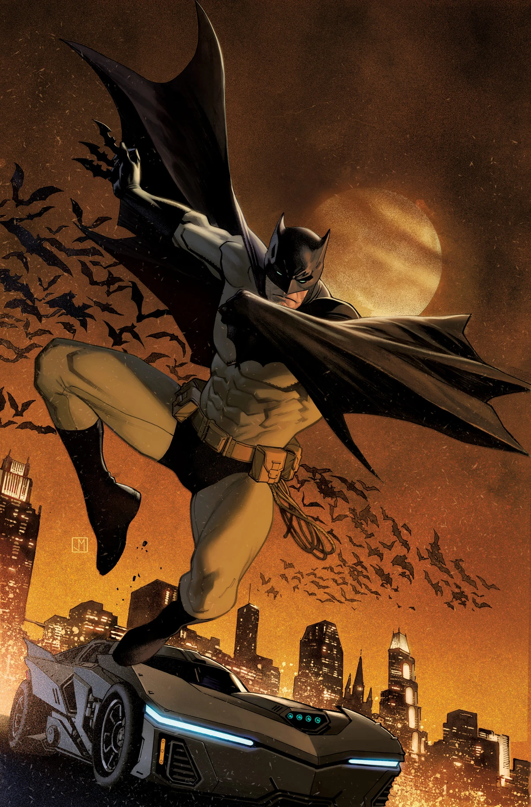

"Ethan" is a vigilante superhero in the fictional city of Gotham. He witnessed the tragic murder of his parents as a child, which motivated him to become a masked crime-fighter to protect the innocent and seek justice. Equipped with exceptional martial arts skills, intelligence, and a vast array of gadgets, Ethan operates under the guise of a bat-themed persona to strike fear into the hearts of criminals. Throughout his crime-fighting career, Ethan encounters various adversaries, including the iconic Joker, a deranged criminal mastermind with a penchant for chaos and mayhem. Additionally, he faces other formidable foes like Two-Face, Penguin, and Riddler, each with their own twisted motivations and sinister plots to challenge Gotham's protector. In his dual life, Ethan portrays a wealthy playboy and philanthropist by day, concealing his identity as a means to protect his loved ones and maintain a normal facade. With the help of his loyal butler and confidant, Alfred Pennyworth, and his technological genius and ally, Lucius Fox, Ethan wages a relentless war on crime, continually honing his skills and adapting to new threats. As "Ethan," he strives to protect Gotham City and its inhabitants from the darkness that lurks within its shadows. Balancing the weight of his own personal demons and the immense responsibility of being a symbol of hope, Ethan aims to prove that even an ordinary man can make a difference in the face of overwhelming adversity.
Click me! so u can be like me 